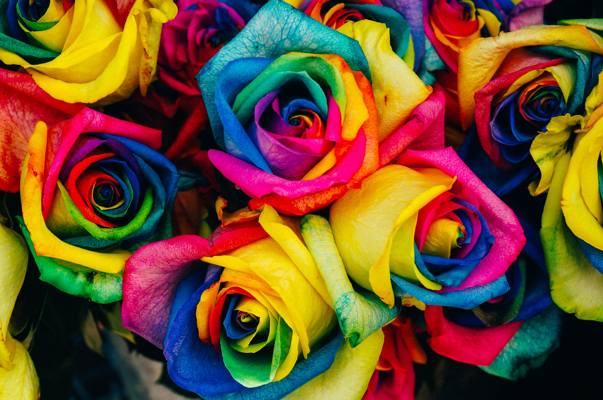

Livet er for meg en lekeplass.
Kunst, kultur, kurs, koding og samtalen er mine verktøy.

Kursing innen programmering
Med egen YouTube kanal lærer jeg vekk mine
kunnskaper om programmering på en lett måte.
Jeg har arbeidet for Aftenskolen Agder og Bergen
kommune.


Multimedia
produsent
Med mye erfaring har jeg fått solid
kunnskap. Jeg jobber med markedsføring, nettside-, video- og grafisk produksjon.
Jeg har blant
annet jobbet for BUFDIR, Aftenskolen og Sørlandets kunstmuseum.


Journalist og forfatter
Min utdanning er som journalist fra
Høgskulen i Volda. Jeg er nysjerrig av natur og elser å formidle de gode historiene.
Jeg har
arbeidet med en rekke prosjekter og skriver jevnlig artikler.